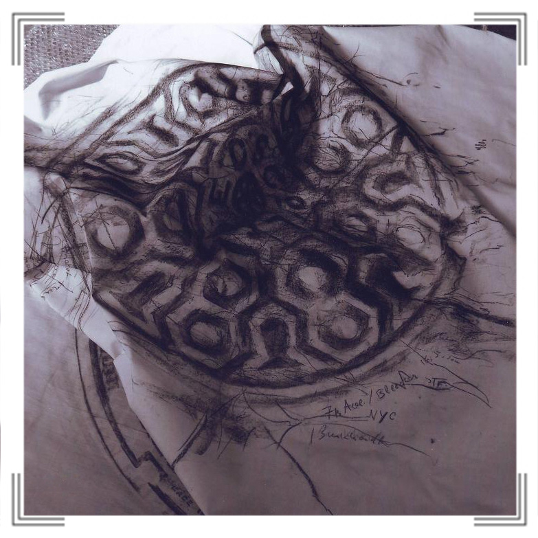
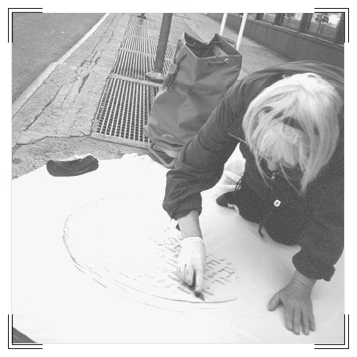
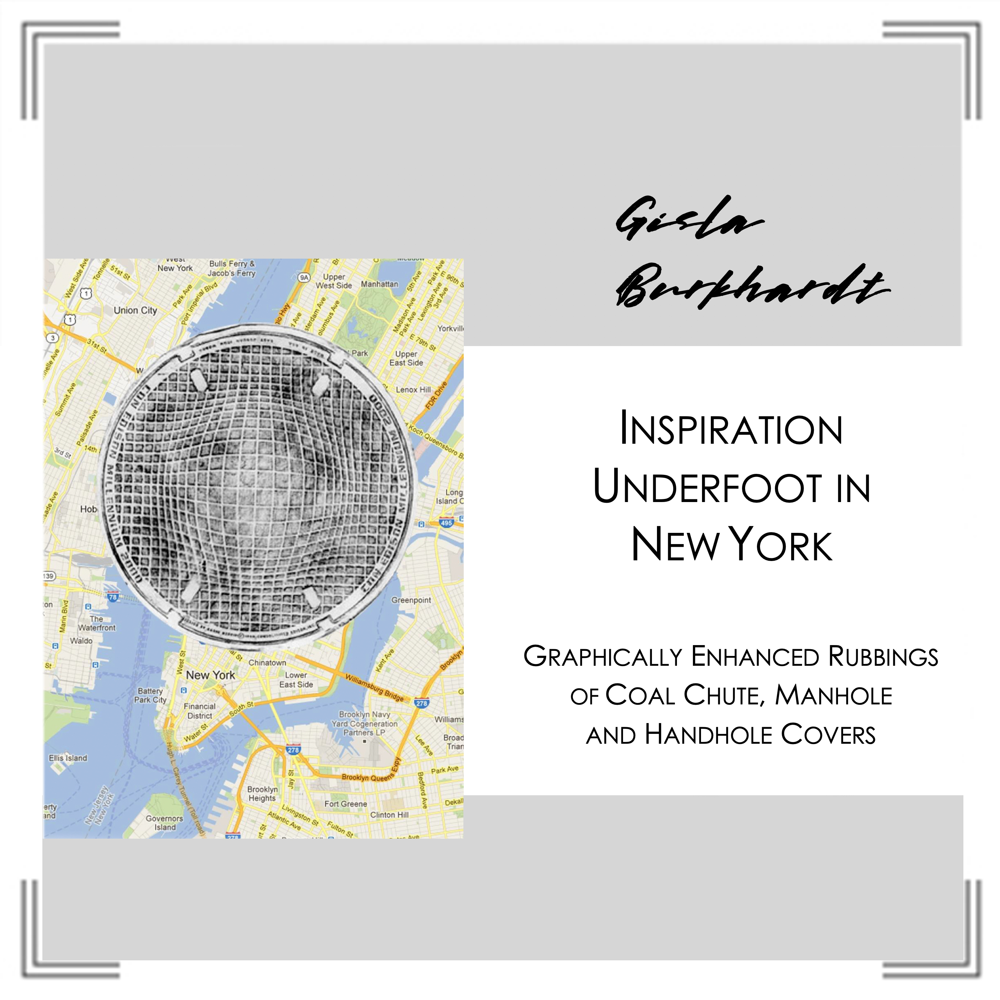
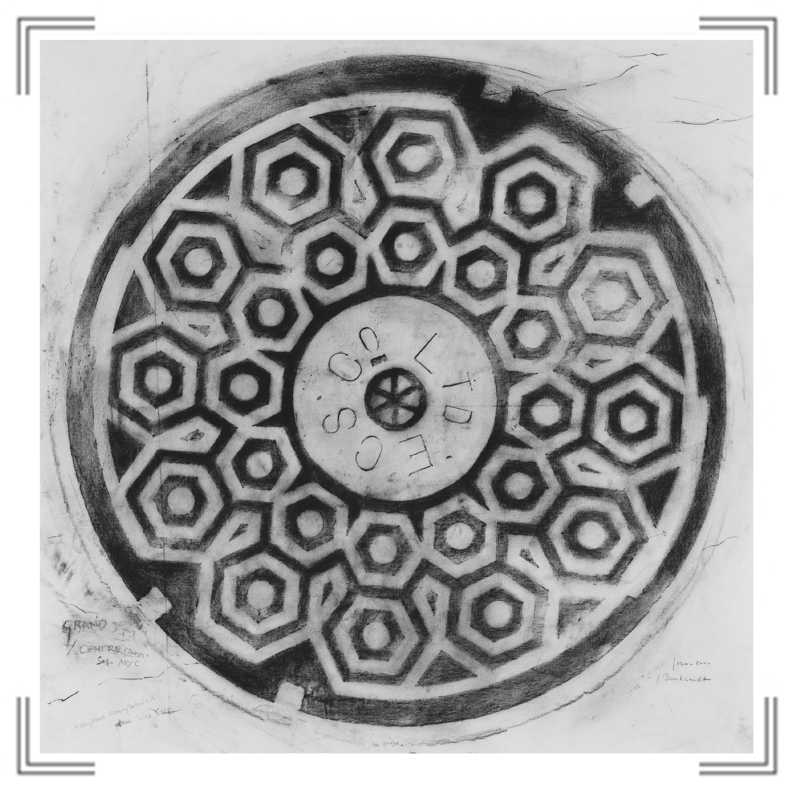
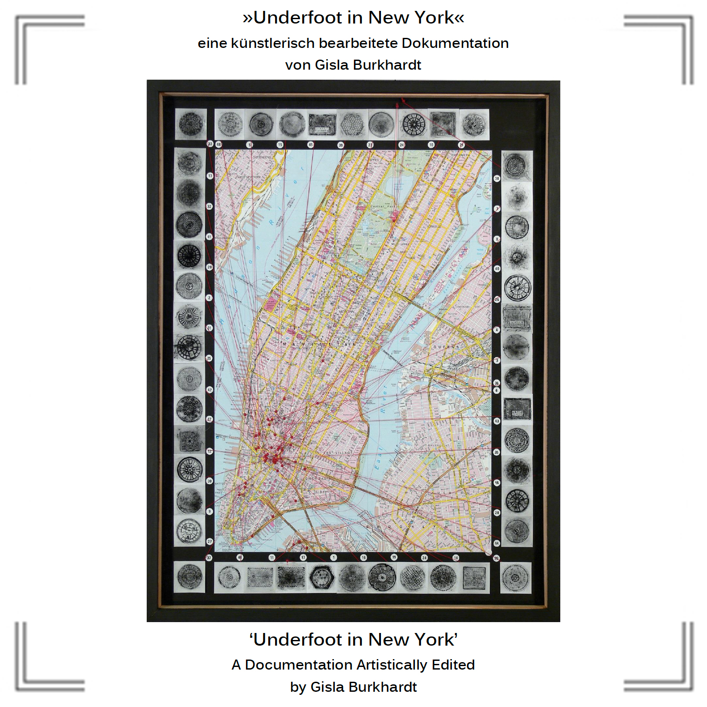

|
„Underfoot in New York“
Auf der Suche nach einem Ausstellungsprojekt, das ich (Grafikerin und Malerin) während meiner New York-Aufenthalte zwischen
1999 und 2005 problemlos im Koffer nach Berlin transportieren könnte, fand ich unter meinen Füßen diese mich vorwiegend durch
ihre graphische Gestaltung faszinierenden runden und eckigen Eisendeckel, deren Funktion, Symbole und Buchstaben sowie deren
Geschichte und Herstellung neugierig machte.  
Diese coalchute-, handhole- und manholecovers entsprachen genau meiner Vorstellung von einem New York-spezifischen
Arbeitsprojekt. Also begann ich Schachtdeckel auf cotton vom Broadway frühmorgens abzufrottieren, anschließend im Atelier
mit Graphitstiften zu bearbeiten, in städtischen Bibliotheken und durch Nachfragen deren Zeichen und Symbole Text/Buchstaben
zu erkunden, Entstehung und Fertigung in Gießereien und stilistische Merkmale seit 1830 (Zeit der ersten Straßendeckel in NY)
zu erforschen.
 „Inspiration Underfoot in New York“  „Underfoot in New York“ im Werkverzeichnis  „Underfoot in New York“
|